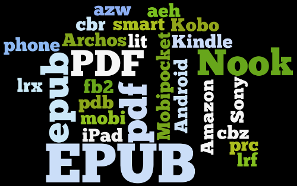

Les formats "classiques".

Il existe énormémemnt de formats de livre numériques, les moins utilisées mais tout de même existant, sont ceux obtenues grâce à des logiciels de traitement de texte (libre office, word, open office ...) qui se présentent sous des formats assez familier des utilisateurs (.odt, .docx). Il est même possible de lire un livre numérique au format .txt ! Cependant ses formats ne sont pas favorisés car ils ne permettent pas d'obtenir une mise en page agréable pour le lecteur.
Le format PDF quand à lui était extremement répendues à l'époque où les liseuses faisaient leurs apparition, mais sont de moins en moins utilisé car leur rendues sur des écrans de petite taille est loin d'être satisfaisant (en effet le PDF s'affichera de la même manière sur un écran d'ordinateur que sur une tablette ou une liseuse).
Le format ePub est quand à lui l'un des plus répendue, ce format permet de s'adapter à n'importe quelle résolution d'écran car celui-çi incorpore du HTML et du CSS dans sa conception, se qui le rend certe plus compliqué à écrire mais qui permet aussi d'avoir une exellente mise en page. C'est donc pour cela qu'il est sans doute l'un des formats les plus répendues.
L'autre format qui est lui aussi très present est le format Kindle, se dernier ne se distingue en rien du format ePub, la seul diffénce est qu'il a été développé par Amazon afin que les liseuses développé par la firme n'accepte que se format, forçant donc les possesseurs de Kindle à acheter leur livres chez Amazon.
Comme dit plus haut il existe une foultitude de formats qui ne peuvent pas tous être traité dans cette article en voici donc une liste non exhaustive : .ps, .fb2, .mobi, .BBeB.